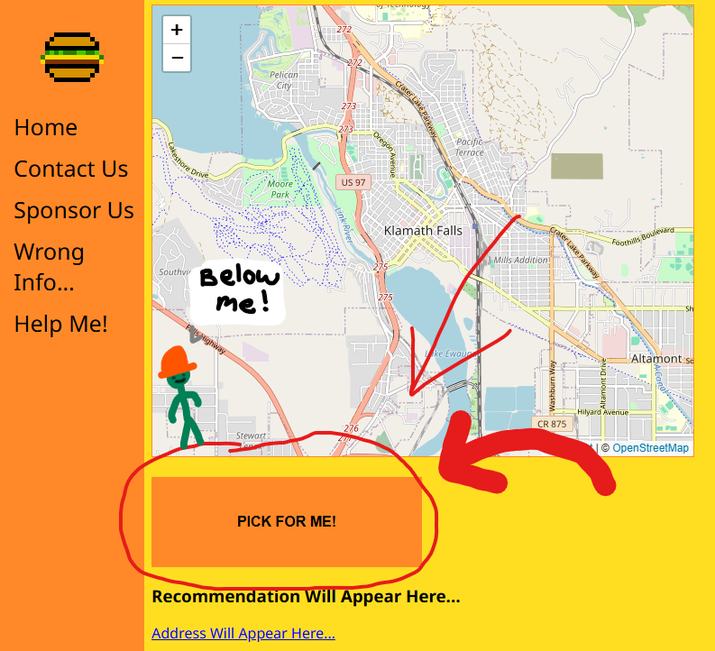

HELP MENU
- If you're just looking for a random place to eat, just press the "PICK FOR ME" button located below the map.

- For filtering (work in progress!), you may press the check boxes to select/deselect desired requirements a restaurant must have
- If for some unforseen circumstance (my poor programming) the website says there was an issue, please reload the site or email me a strongly worded email!
- Good luck! :<)